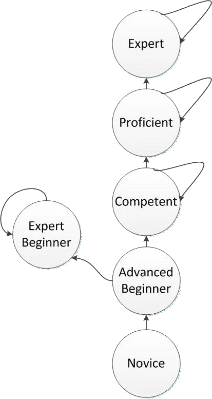

TLDR (click to show/hide)
The type of article thats more exciting if you're me looking back on this in the future or if you're just interested in seeing what another persons progression looks like as a newer software engineer. Even if reading about my progress and goals sounds boring, I still encourage you to read How Developers Stop Learning to avoid the mistake of becoming an 'Expert Beginner' in your own career.
Another year of software engineering in the bag! With the occasion comes my annual self-review of what I wanted to learn in the past year, what I actually learned, and setting some goals for myself looking forward. To keep these articles from dominating too much of the writing I publish on here, I decided to shift this habit to an exponential frequency instead of an annual one; expect the next one of these at the 4 year mark.
Before we start, I wanted to share an article I liked called 'How Developers Stop Learning' which talks about the idea of how software engineers (but really anyone) can get stuck in a Dunning-Krueger-enabled plateau in their progression because they are either unchallenged by their position or simply don't realize in the first place that they haven't 'graduated' to a more competent understanding of engineering.

Extension of the Dreyfus Model of skill acquisition to include the 'Expert Beginner' trap
The issue for many of these developers is that they can't see the 'big picture' from within their niche and simultaneously fail to self-analyze and recognize that tendency. This is exacerbated by the fact that the feedback cycles in learning more about software can be on the order of months where a decision you make when starting a project doesn't bite you in the ass until half a year later.
The prescription for this issue seems to be working on new projects and exploring new options for them as often as possible. The important benefit of this comes from maintaining each of these projects long enough that you get to see whether a particular early decision paid off or whether it became a pain for you while adding to it later. With this in mind, I'd like to analyze my previous goals from the perspective of whether they made me 'more component' or whether they pushed me further down the route of becoming another 'expert beginner'. I'll then structure my upcoming goals in a way that takes the advice of trying some longer term projects and really paying attention to how my coding style and project structure affect my experience towards the end of the project.
Last Year's Goals
See last year's article here.
The goals I acheived the best degree of success in were those I set out related to machine learning. I've started my Master's program and already learned a great deal about general machine learning methods and am currently in a reinforcement learning course. I read a decent amount about fields within ML like MLOps and got the chance to work on a model at my job and talk to some other engineers about considerations for ML beyond just model development that taught me a lot.
I also spent some time (but not as much as I would have hoped) on making larger personal projects. With Epicure AI I got familiar with the OpenAI API and I entered my largest solo project yet, Learn Anything into a Hackathon which I spent a good chunk of time on. With the latter, I really got a sense of what those long-term feedback cycles can feel like as decisions I made at the beginning of building my API caused a bit of a headache around the 60 hour mark of working on the project.
As for my other goals related to networking and AWS; I fell short. I realized that AWS certifications were not really something that I needed and that the goal of working towards getting all of them appealed more to my completionist mindset than my goal of becoming a better software engineer. Networking is still something I want to learn more about, but it falls further out of the scope of general 'software / machine learning engineering' and will likely be something I pick at as it comes up rather than a hard goal I set for myself.
What I've Learned
I'm happy to report as I did last year that work experience is a much better way to learn than in a classroom or from a book. Looking back, I'm happy with my learning progress and got to go more in depth on a few things enough that I was able to independently work on projects with each of:
- Payment Integrations (Authorize.Net and Finix)
- RabbitMQ (Spring Boot configuration and DLQs)
- Event-Based Architecures
- Transactions (isolation levels, concurrency, lock types)
- Datadog (still a good amount to learn though)
- Spring Boot API Best Practices
- Nginx and Browser Caching
- Split.io and A/B/n Testing
And through personal projects, learning in my free time, and studying for classes, I got some exposure to:
- MLOps (considerations for model development and deployment)
- Advanced SQL (window functions, triggers, procedures, etc.)
- Vercel (CI/CD and monitoring)
- OpenAI and Gemini APIs
- Basic ML Techniques (PAC learning, cross validation, boosting, PCA, MLE, EM, kernel methods, etc.)
- Basic RL Techniques (MDPs, dynamic programming, MCMs, temporal-difference, Q-learning, etc.)
Comparing the depth I can talk about each of these to the list of things I learned about after my first year gives me confidence that my understanding is getting stronger. Its not just that I had exposure to each of these, but that I was able to know them well enough to accomplish larger goals using each without too much help from others.
I'd still be hesitant to say I know all of these incredibly well, but knowing them better broadens the types of problems I'm able to work on and how efficiently I'm able to solve them. Much more learning to come, but I'm glad the rate of learning hasn't seemed to slow.
My Upcoming Goals
Keeping in mind that my next check-in will be two years from now, I've set up a larger collection of goals for myself.
Machine Learning Model Development: With a goal of being able to one day contribute to machine learning research, several of my goals here will revolve around getting practical experience implementing models directly from articles and catching up to the current forefront of the field. In addition to these more concrete goals, I want to spend some time narrowing in on a more specific subfield of ML that I would be interested in pursuing (currently its reinforcement learning).
- Become deeply familiar with PyTorch. Demonstrate this by building complex / interesting model architectures from scratch:
- Deep Q-Learning RL Agent
- Neural Radiance Fields
- Generative Diffusion Model
- Transformer
- Mamba
- Practice packaging and rehydrating models from different formats (ex: ONNX).
- Participate in at least 2 Kaggle competitions.
- Engage more with the ML research community. This can be done by reading several articles to get a better sense of the current state-of-the-art and/or by attending and participating in conferences.
- Complete my Master's degree.
Software Tool Mastery: These next goals fall more broadly into the category of 'tool mastery'. That is, just getting generally better at the skills surrounding actual software development. The main themes here are improving my efficiency while coding and getting a much deeper understanding of my tools to try and optimize the unofficial metric of how many times I have to look up how to do something.
- Learn how to use VIM at a competent level such that it improves my coding speed.
- Work on my shell proficiency; gain a deeper understanding of shell config, commands, and more advanced file management and scripting.
- Try IntelliJ and DataGrip to get a sense of what benefits other tools provide. Either switch to using them or find a way to acheive the same capabilities with tools I currently use like VSCode and Beekeeper.
- Not exactly a 'tool', but I want to work on at least one medium length project using Java from scratch. Most of my personal projects have been in Python / JS so I think this would be a good way to strengthen my day-to-day development skills.
System Design / Infrastructure: In the vein of getting better at seeing the 'big picture', I want to both explore new tools and get better at ones I've already used related to infrastructure. In particular, I'm interested in tools that lean towards MLOps, but several of these have overlap with what might be expected of a typical senior engineer:
- Deeper understanding of containerization, Docker, and practice with Kubernetes. Should work on at least one project that requires these paired with an in-depth pedagogical article to prove I've really understood the details.
- Practice with Terraform by making a simple infra set up on my personal AWS (ideally an ML pipeline). Should also be able to understand a majority of the Terraform used to set up the different environments we have at my job and how to run them.
- Read up on and practice system design interview questions. Should be able to come up with a 'best' complete solution to most architecture problems (at least from a theoretical standpoint; no need to know how to use all of the involved tools).